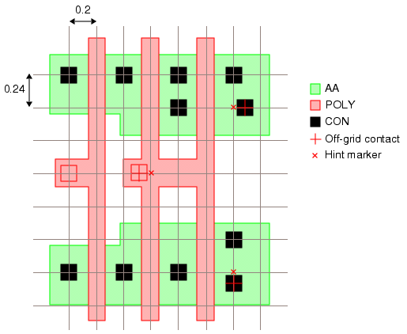

You can check
that the center points of contacts within an optical radius are
spaced with an integer pitch value relative to each other.
Refer to the conceptual illustration shown
in Figure 1. In this figure, contacts that are
not aligned to the grid (which is spaced 0.2 units in the x direction
and 0.24 units in the y direction) are identified as errors, and
hint markers show how each contact can be moved to pass the check.
Figure 1. Contact Relative Pitch
This check can be implemented using the Offgrid operation.
Try It!
 |
Calibre Advanced DRC (eqDRC) Tutorial and Example Kit
Go to this page on Support Center
to download the complete eKit.
This example is in the grid_pitch_checks/con_rel_pitch
example directory.
|
Procedure
- Define the contact pitch,
optical radius, and contact width.
VARIABLE xpitch 0.20 // contact pitch in x direction
VARIABLE ypitch 0.24 // contact pitch in y direction
VARIABLE optradius 2 // optical radius distance
VARIABLE contwidth 0.12 // contact width
- Define the layer that represents
the optical radius. This layer is used to group contacts separated
by a distance that is less than the optical radius.
cogroup = EXTENTS (GROW CONT
RIGHT BY xpitch*optradius-contwidth/2
LEFT BY xpitch*optradius-contwidth/2
TOP BY ypitch*optradius-contwidth/2
BOTTOM BY ypitch*optradius-contwidth/2
)
- Use the Offgrid command to
perform grid checking for the groups of contacts.
offgridcont = OFFGRID CONT 200 240 INSIDE OF LAYER cogroup ABSOLUTE
CENTERS HINT
- Output the results with a
DFM RDB operation.
con_pitch {
DFM RDB offgridcont "contactpitch.rdb" CHECKNAME "%_l_"
CELL SPACE ALL CELLS NOPSEUDO
}